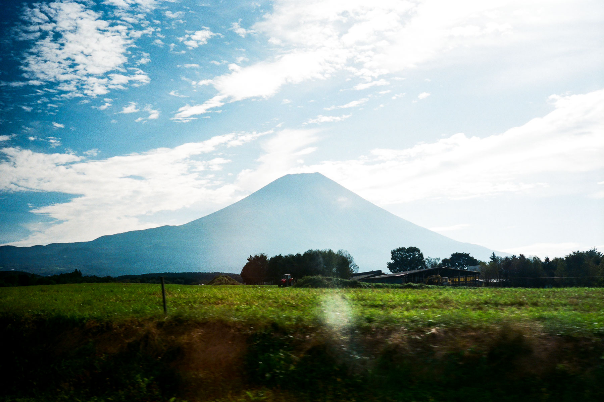
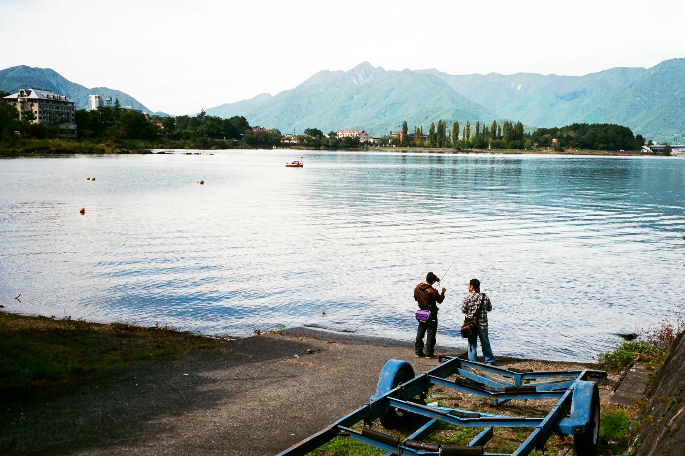
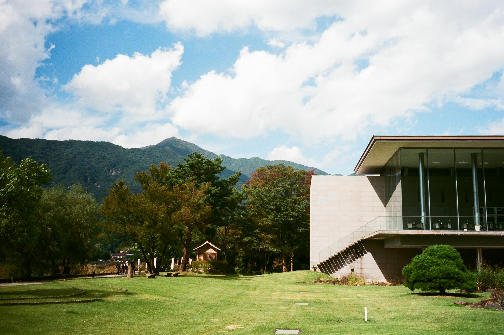

在富士宮的特式旅館留宿，這晚也睡得不錯，起床後便回到富士市宮駅巴士站，等巴士去河口湖。
巴士沿途都風景明媚，經過朝霧高原、進入山梨縣、略過富士五湖，一直都圍繞著富士山。

車程不短，終於來到了很多遊客的河口湖，河口湖駅後面便看到富士山！
我去了車站附近的郵局寄明信片，然後再乘坐河口湖的周遊巴士，我首先到了天上山公園纜車。

乘纜車上山，可以看到富士山的全貌！
看完富士山，我便到了河口湖美術館。

之後回到河口湖駅，在一間裝修復古的食店吃雜菜烏冬湯。
然後見時間尚早，即興搭巴士上了海拔二千三百米的富士山五合目，這裏原來是遊客區，非常熱鬧。

上到來當然不執輸，參觀一下富士山小御嶽神社。
最後我便下山回到河口湖駅，乘巴士到富士山東面的須走市，留宿一晚。